오늘도 역시나 새벽에 눈이 떠졌다. 시애틀의 겨울바람이 연신 창문을 두드렸다. 그 너머로는 희미하게 사이렌 소리가 바람을 타고 실려 왔다. 한국에서 다니는 학교 바로 옆엔 병원이 자리하고 있어 사이렌 소리가 심심찮게 들려온다. 익숙한 일상의 소리. 허나 누군가에겐 일상의 지루함마저 그리워질 일상적이지 못한 이상(異常)의 신호탄. 평소 의식하면서 살진 않지만 이렇게 소리를 곱씹어 볼 때마다 그 안에서 새어 나오는 싸늘함이 가슴을 무겁게 만든다. 무거워진 마음을 안고 다시 잠을 청했던 새벽이 어쩌면 우리의 시애틀 여행에서 마지막으로 안온한 밤이었다는 것을 그로부터 12시간 후 깨달았다.
이날 아침은 이틀간 정든 첫 숙소 Hotel Max를 떠나 Loyal Inn 이라는 새
숙소로 이동하는 날이었다. 미국에서 숙소를 구하다 보면 ‘~inn’을 매우
쉽게 찾을 수 있는데 대충 한국의 모텔이나 여인숙과 비슷하다고 보면
된다. 시설은 썩 좋지 않지만 가격이 싸기 때문에 우리같이 금전적으로
여유가 없는 여행객들이 이용하기에 좋다. 우연히 숙박 어플 할인가로 나와
‘환불불가’라는 어마어마한 조건을 걸고도 꽤 비싼 값으로 예약했던 Hotel
Max는 우리에겐 과분한 숙소였다. 세상에 싸고 좋은 것을 찾기란 하늘의 별
따기와 같다. 역시 돈은 제값을 한다.

(호텔 맥스의 직원이 타 준 모닝커피. 밖엔 비가 조금씩 내렸기에 손에
쥔 따스함은 새 숙소를 향해 출발하는 우리에게 마음의 온기와 여유를
보태 주었다.)
새 숙소는 도보로 10분 거리였지만 무거운 짐과 함께 낯선 길을 걸어갔기에
체감 시간이 꽤 길게 느껴졌다. 구글 맵에 의지한 채 걸어가는 시간이
길어지면서 커피는 식어갔고 차차 빗줄기도 굵어졌기에 마음속의 불안감이
커지기 시작했다. 한 골목, 한 골목 돌 때마다 ‘숙소가 나올 때가
됐는데…….’ 애가 탔다. 낯섦이 주는 공포는 언제나 반갑지 않다. 그러나 그
두려움을 이겨냈을 때의 쾌감과 뿌듯함은 나를 한 단계 더 성장시키는
기분이 든다. 집을 떠나 낯선 지역에서 새로운 학교에 입학해 새로
사람들을 만났던 작년 한 해, 낯섦을 극복한 나의 세상은 더 넓어졌다. 저
멀리 Loyal Inn이라는 간판을 보았을 때 느낀 감정 또한 두려움에 도전한
이들에게 주어진 선물이자, 넓어진 세상에 대한 하나의 징표였다.
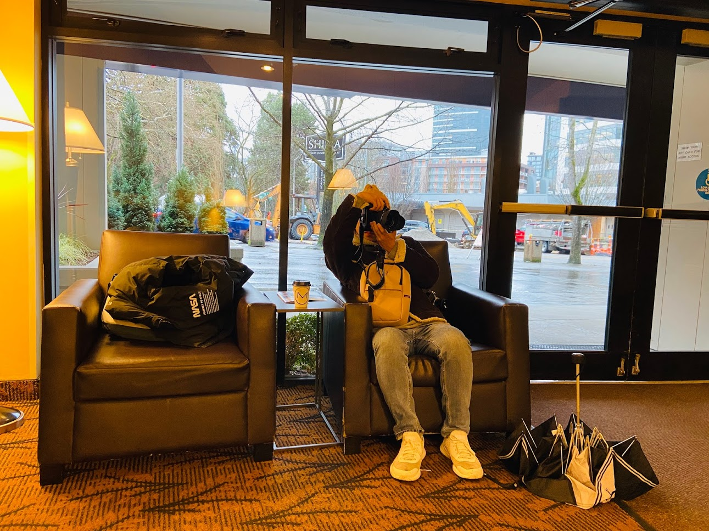
(도착한 새 숙소 로비에서의 포토그래퍼 창. 그의 카메라는 쉬지
않는다.)
새 숙소에서의 체크인은 무난했다. 짐도 무사히 맡기고 난 뒤, 본격적으로
시애틀에서의 마지막 투어를 시작했다. 우리의 첫 목적지는 워싱턴 대학교.
시애틀 도시 외곽에 있는 이 대학교는 한국에서 그리 유명한 대학교는
아니지만, 그 나름의 깊은 역사와 뛰어난 내실을 자랑하는 학교이다. 외국
대학교와 학생들의 모습이 어떠한지 궁금했고 워낙 건물과 조경이
아름답다고도 했다. 그리고 무엇보다 영화 ‘해리포터’ 촬영지였다는 사실은
우리를 이곳으로 이끌기 충분한 매력이었다.
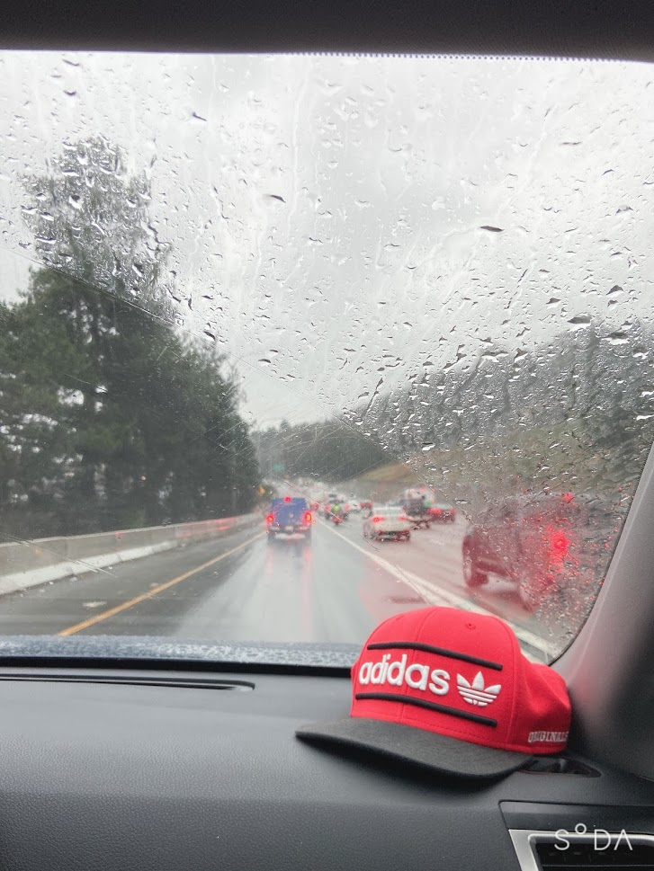
(워싱턴 대학교로 이동하는 우버에서 찍은 사진. 이날도 어김없이 비가
내렸다. 학교는 생각보다 도심에서 멀리 떨어져 있었지만, 덕분에 가는
길에 시애틀의 숲과 호수, 건물들을 전체적으로 감상할 수
있었다.)
학교에 내리자마자 우리가 마주한 것은 거대한 연못과 그 안팎을 왔다갔다
뛰노는 오리(?)들이었다. 둥근 연못을 중심에 둔 채 높진 않지만 하늘을
찌르듯 뾰족하게 솟아있는 고딕 양식의 건물들이 우리 주위를 둘러쌌고 그
사이를 바쁘게 움직이는 학생들도 눈에 띄었다. 우린 먼저 해리포터 도서관
촬영지를 보기 위해 ‘수잘로 도서관(Suzallo Library)’으로 발걸음을
옮겼다. 학교가 워낙 컸기에 도서관 위치를 찾아가는 데에 약간의 어려움을
겪었지만, 등교하는 학생들과 섞여 마치 이 학교에 관광이 아닌 유학을 온
것처럼 발에 긴장을 풀고 자연스레 걸었다. 관광객의 방황이라기보다
학생의 탐방을 체험하는 기분으로. 어느새 우린 넓게 펼쳐진 광장 앞에
도착했고 수많은 사람들이 바삐 수업을 들으러 이곳, 저곳으로 흩어져 가고
있었다. 아마 여기도 9시 수업이 있나보다. ‘여기 학생들은 출튀도
안하나?’와 같은 이상한 생각을 하다가 문득 한 고풍스런 건물에 많은
사람들이 들어가는 모습이 눈에 띄었다. 묵힌 책들과 지식을 추구하는
사람들이 발산한 아우라는 우리의 걸음을 이끌었고 드디어 이 학교에서
가장 와보고 싶었던 곳에 도착했다.
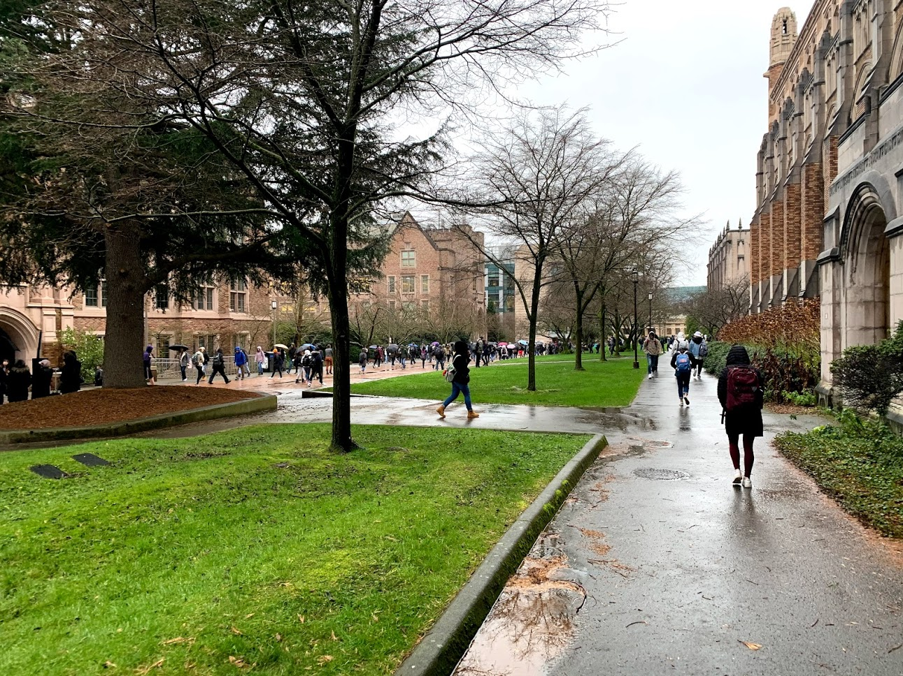
(9시 수업인지는 모르겠지만 수업을 들으러 가는 학생들. 여행을 왔지만
이 순간만큼은 이들과 같이 수업을 듣고 싶었다. 나는 놀고 있는데
당신들은 열심이시네요...)
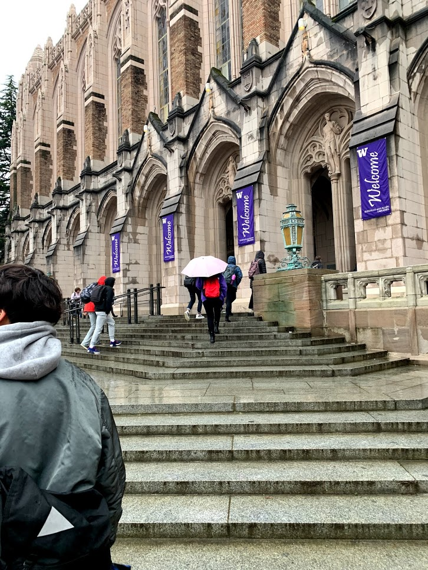
(수잘로 도서관으로 들어가는 계단. 건물 외관부터 참 멋있었다.
우리학교 도서관도 나름 좋은데 여기에 비할 바는 아닌 것
같다ㅜㅜ.)
건물을 들어가자마자 1층의 스타벅스가 눈에 띄었다. 하긴 공부하거나 책을
읽을 때는 커피를 빼놓을 수 없다. 카페 안에 길게 줄이 늘어져 있는
것으로 보아 나와 같은 생각을 하는 사람들이 생각보다 많은가 보다.
계단을 통해 2층으로 올라가자 수많은 책이 있는 곳과 자유롭게 공부를 할
수 있는 열람실이 있었다. 혹여나 공부하는 학생들에게 방해가 되진 않을까
조심스레 발걸음을 옮기며 조용히 열람실로 들어갔다.
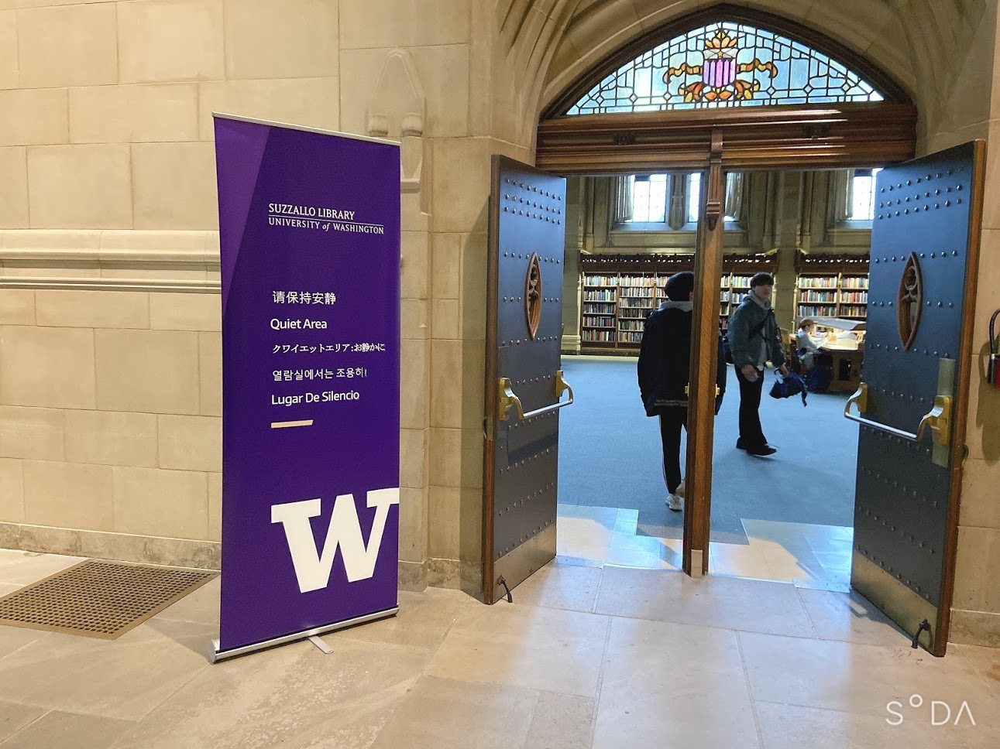
(열람실 입구. 한국말로도 조용히 하라고 친절히 써뒀다. 절대정숙!)
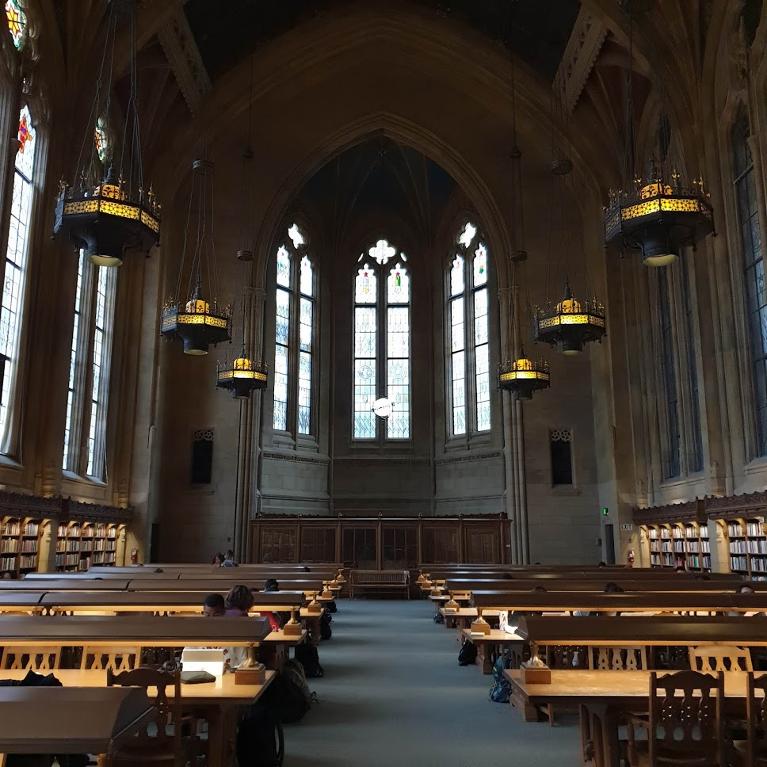
(수잘로 도서관 열람실의 모습. 아침이라 그런지 빈자리가 꽤 많았다.
열람실 가장자리엔 세계 각국의 언어로 쓰인 책들이 많이 꽂혀있다.
한국어 책을 찾는 것도 하나의 재미.)
해리포터를 안본지 오래되어 영화 속 도서관의 모습과 비슷한지는 잘 모르겠으나 확실히 그런 영화에 나올 법한 비주얼의 도서관이었다. 중세시대 성당의 스테인드글라스와 같이 큰 창에서 들어오는 빛과 은은한 전체조명이 전반적으로 아늑하고 고요한 분위기를 만들었고, 백색의 부분조명들은 눈앞에 펼쳐진 책에 집중할 수 있는 환경을 조성해 주었다. 나는 정적 속의 열의가 감도는 열람실 한복판에 서서 주위를 둘러보았다. 그러고는 눈 밖에 펼쳐진 장면을 카메라에 담는 것보다 내면의 차오르는 상념을 담아보는데 집중했다.
바다건너 저 멀리, 작은 반도에서 일상을 벗어나 떠나온 한 여행객은 그가 남기고 온 ‘학생’을 떠올린다. 집안의 작은 밥상머리에서 시작해 칙칙한 학교 책상을 지나 대치동, 그 번쩍이는 불빛을 뚫고 원하던 곳에 닿은 학생은 무언의 큰 중압감에서 벗어나 삶의 자유를 즐기기로 마음먹었다. 빈 방에서 홀로 핸드폰과 tv를 맘껏 보기도 하고 귀찮으면 수업도 가볍게 제치고 난 뒤 친구, 동기, 선배들과 함께 술도 먹고 여행도 다니며 그간 즐기지 못했던 것들을 누렸다. “이때 아니면 못 놀아”, “언제 또 이런 시간이 올 것 같아?”와 같은 주위의 말들은 그의 행위에 당위성을 부여했고 시간이 흐를수록 그는 완전한 줄 알았으나 사실은 나이와 시간에 강제된 불완전한 자유에 서서히 물들어 갔다. 그렇게 1년이 흐르고 난 뒤, 역시나 그 나이에 걸맞게 해외여행을 떠나야만 했던 그는 3명의 친구에게 1명의 여행객을 실어 미국으로 보냈다. 그를 보내면서 꼭 요세미티를, 금문교를, 그랜드 캐니언을 보고 경험할 것을, 그리고 미국의 정체성과 힘을 느끼고 배울 것을 주문했다. 여행객은 마치 임무를 받은 ‘제이슨 본’과 같았다. 단지 장소가 지중해의 배 위가 아닌 미국의 도시들이었을 뿐. 왜 떠나왔고, 무엇이 그를 이 먼 미국으로 보냈는지 망각한 채 계획 수립, 목표 달성, 무사 귀환이라는 임무에 집중했다. ‘최대한 많이 보고 배우고 느껴야 해’라는 생각에 지배당한 그는 지금 서 있는 이곳, 워싱턴 대학교 수잘로 도서관에 도착하고 나서야 비로소 그의 자취를 돌아보았고 그가 한국에 남기고 온 학생을 바라보았다. 여행객이 본 책상에 앉아 묵묵히 미래를 공부하던 학생들, 지식의 창고에서 한 권 두 권 인생의 나침판을 찾아보던 사람들, 일상의 기쁨과 슬픔을 다른 이들과 나누고 씁쓸한 커피 한잔에 다시 나아갈 힘을 얻던 이들의 모습은 어딘가가 익숙했다. 그러고는 생각했다. 혹시 밥상머리에서 나침판을 보던 한 꼬맹이가 그들이 아니었을까, 칙칙한 책상 앞에서 미래를 준비하던 그 학생도 그들이 아니었을까, 어쩌면 떠나온 내가 남겨진 나이지 않을까. 마침내 불완전한 자유를 인식한 그 순간, 지나간 과거의 후회와 닥쳐올 미래에 대한 걱정보다 더 중요한 것이 마음속에 떠오른다. 바로 나 자신과 현재. 나는 누구인가?, 내 앞엔 무엇이 있는가? 과거의 계획이 현재의 행동을 만들고 미래의 목표를 달성하게 하는 순행적 흐름을 깨고, 나 자신과 내 앞의 주어진 현재를 중심으로 과거를 재창출하며 미래를 구상한다. 수잘로 도서관 한가운데에서 학생과 여행객을 만난 나는 임무인줄 알았던 여행에서 강제성을 지우고 창조성을 불어넣는다. 더 이상의 불완전한 자유는 없다. 여행객의 여행도 그 자리에서 막을 내린다. 동시에 나의 여정이 와 닿기 시작한다. 지금 이 여행기 또한 당시의 현재에서 뻗어 나온 지금의 과거이며 이를 통해 나는 계획된 것과는 전혀 다른 새로운 미래를 그려본다. 그곳엔 수잘로 도서관과 내가 주고받은, 무지와 깨우침의 상호작용이 부디 완전한 자유로 재탄생하길 기도한다. ‘제이슨 본’이 아닌 ‘데이비드 웹’의 모습으로 부활하길 꿈꾸어본다.
수잘로 도서관에서 나와 보니 이제 광장은 텅 비어 있었다. 우린 한적해진
대학을 감싸주는 거대한 나무들이 있는 산책길로 발걸음을 옮겨 학교를
돌기 시작했다.
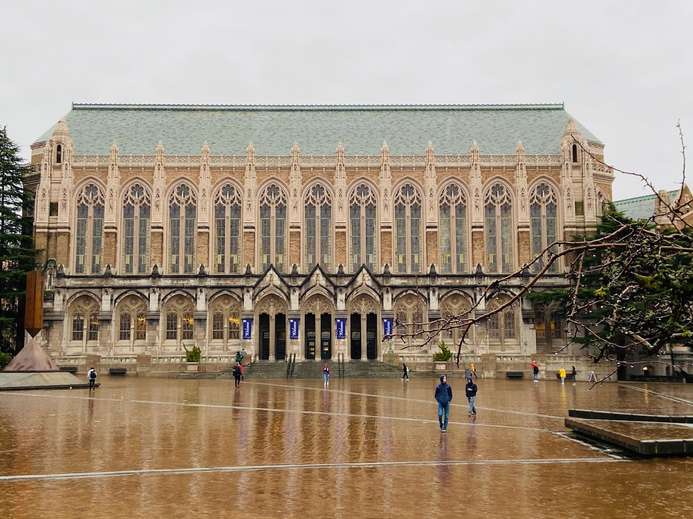
(밖에서 본 수잘로 도서관 건물. 확실히 들어갈 때보다 한적해진 광장.)
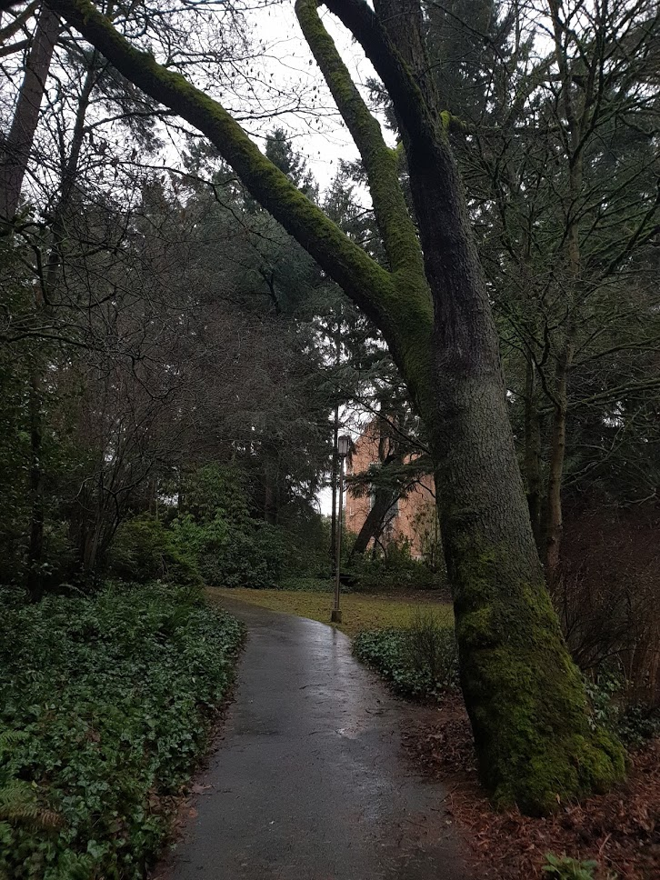
(학교 안에 이런 곳이 있다니 놀라울 따름.)
비도 거하게 맞았지만 케리 파크를 갈 때와 비슷한 텐션과 발놀림으로
학교를 돌고 다시 중앙의 연못으로 돌아왔다. 원래는 연못을 등지고
바라보는 풍경이 정말 아름답다고 했다. 푸른 잔디밭 양 옆으론 나무들이
줄지어 서 있고 그 가운데로는 워싱턴의 지붕이라 불리는 레이니어 산(Mt.
Rainier)이 보인다고 한다. 그러나 이날은 비가 왔고 날이 흐렸던 관계로
이 멋있는 풍경을 볼 순 없었지만 탁 트인 공간으로 자유롭게 날아갔다
돌아온 시선이 우리에게 상쾌함을 가져다 준 것은 확실했다.
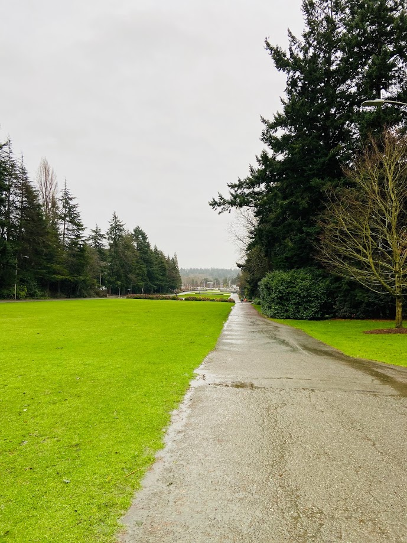
(산이 보여야 하는데...)
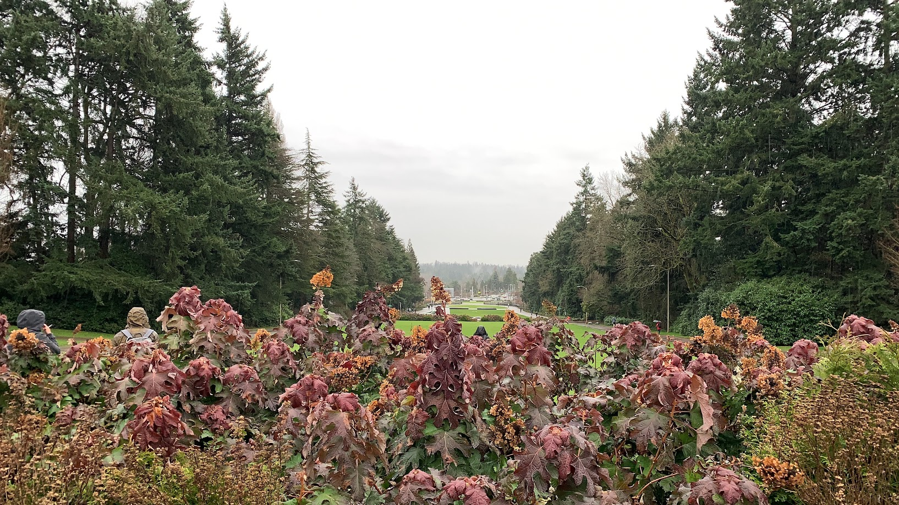
(시애틀 겨울여행의 단점. 비가 항상 온다. 봄이나 여름에 꼭 다시
와야겠다.)
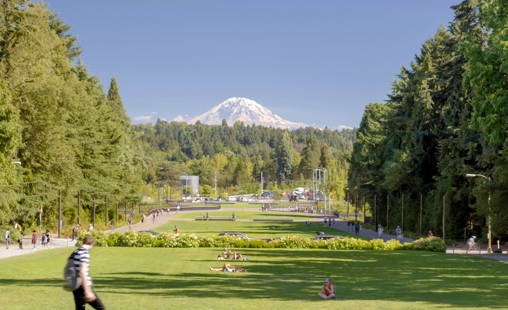
(원래는 이렇다고 한다..ㅜㅠㅜ)
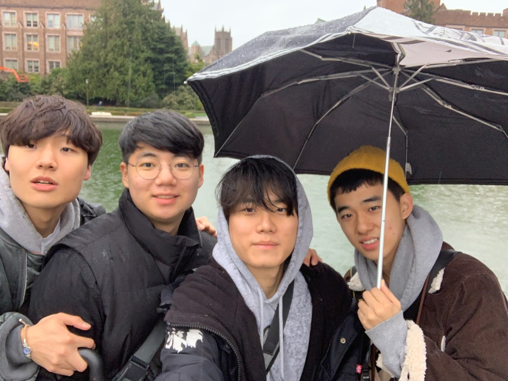
(4명이서 옹기종기 걸터앉아 찍은 사진. 딱 봐도 불안해 보이는 창렬이의
저 우산은 그 뒤로 운명했다고...)
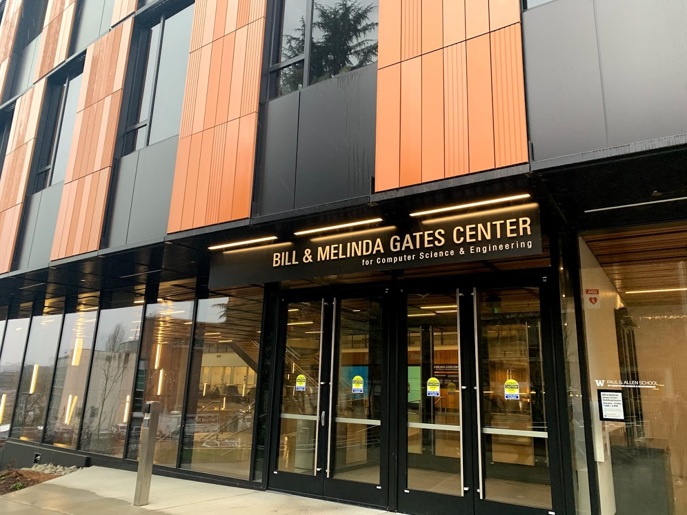
다음으로 눈에 띈 것은 위 사진에 보이는 BILL & MELINDA GATES
CENTER이었다. 워싱턴 대학교에 대한 사전 조사를 도서관 외엔 딱히 하고
오지 않았기 때문에 이런 건물이 존재하는지도 몰랐다. 마침 우리 중에
컴공에 미친(?)사람이 한 명 있었기 때문에 과감히 건물 안으로 들어가
보았다.
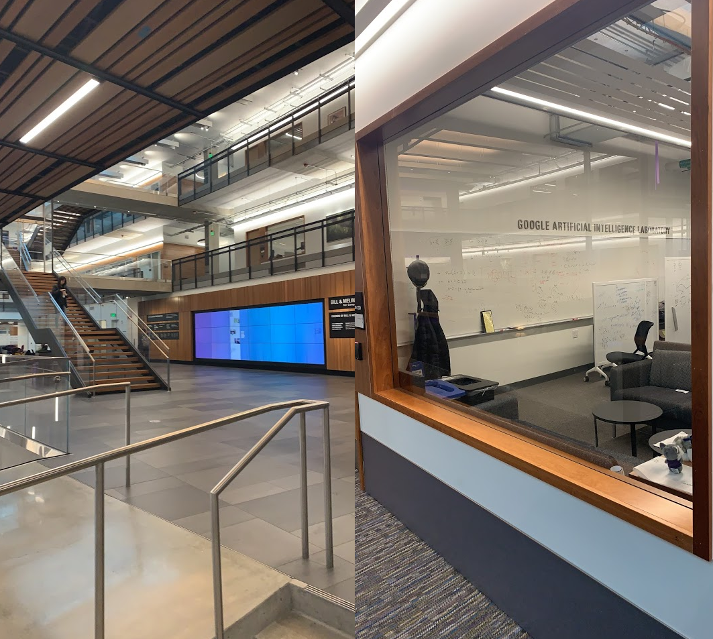
((좌)센터 내부의 모습.
(우)세상을 바꾸는 nerd(?)꿈나무들의 흔적.)
눈치 챈 사람도 있겠지만 위의 쓰여 있는 두 이름은 이전 여행기에서도
언급되었던 ‘microsoft'(이하 마소)의 창업자인 빌 게이츠와 그의 아내
멜린다 게이츠이다. “사람은 도시를 만들고, 도시는 사람을 만든다.”라는
말이 있다. 아마존, 마이크로소프트와 같은 거대 IT기업이 시애틀이란
도시에 자리를 잡으니 사람들이 모였고 그들은 시애틀을 IT허브 도시로
재탄생시켰다. 사람이 도시를 만든 모습이다. 그 후 시애틀과 기업들은
대학과의 연계교육을 통해 IT대기업부터 시작해서 수많은 벤처기업들이
필요로 하는 인력을 양성한다. 도시가 사람을 만든 것이다. 현재
시애틀의 위상을 수치로 확인해보면, 창업 생태계 가치가 약
240억달러(약 27조원·'스타트업 게놈'2019년 보고서)로 서울의 약 5배
수준에 달하고 2018년 시애틀의 초기 벤처에 투자된 돈은 약 8억5500만
달러, 서울의 10배다. 2017년 시애틀의 IT 관련 신규 일자리(8200개)는
실리콘밸리(약 1100개)를 넘어섰다. 우리가 들어가 본 이 건물, 그
안에서 연구하고 토론하던 학생들은 위의 사람과 도시의 선순환 과정의
한 축이었다. 끊임없이 수식과 씨름하고, 새벽까지 컴퓨터 앞에서
외로움과 싸우며 프로그램을 개발하는 그들이 이전에 1일차에서 언급했던
세상을 바꾸는 트렌드를 이끌어가는 사람들이다. 어찌 보면 컴퓨터
너드들로 남을 뻔했던 그들. 도시가 발판이 되어주었고 그들에게 날개를
달아주었다. 이야기는 무언가를 가장 효과적으로 기억하는 데에 유용한
수단이다. 지금은 ‘탑 독’이 된 그들의 ‘언더 독’ 스토리가 여러 기업의
마케팅에 녹아들어 우리 기억 속에 각인된다. 지금 필자가 이런 글을
쓰는 이유 또한 거기에 빠져들었기 때문이리라. 과학지식에 더해진
인문학은 대중을 움직인다. 결국 핵심은 사람이다. 시애틀은 그런 면에서
참 매력적인 도시이다. 세계 각지에서, 미국 전역에서 굴러 들어온
사람들이 도시를 굴려간다. 누구는 도심지의 위치한 일터에서 현재의
가치를 창출하고, 누구는 북부의 대학교에서 미래의 가치를 상상한다.
본인들은 모를 것이다. 그러나 내가 3일간 경험한 시애틀은 그런
도시였다.
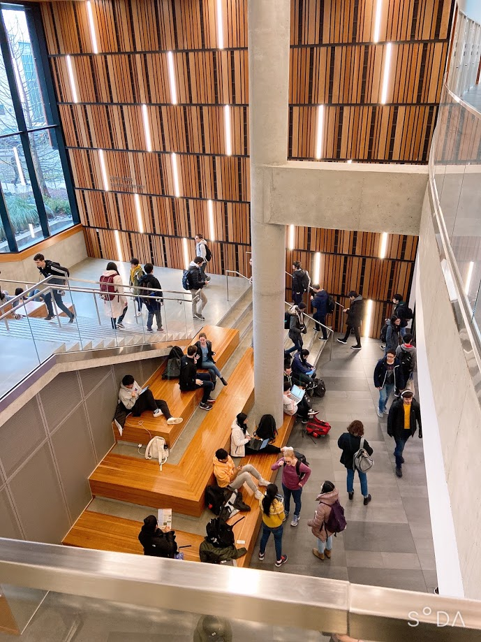
우리는 학교를 빙 돌아 근처의 ‘유니버시티 빌리지’로 향했다. 그곳은 마치
한국에 있는 아울렛과 비슷한 모습으로 대학생들의 소비 니즈를 충족시킬
만한 아름다운 스트리트몰이었다. 잘 정돈된 거리 양쪽으로 여러 옷가게,
레스토랑, 디저트 카페 등 상점들이 들어서 있었고, 중간 중간 재미난
조형물들이 방문객들의 눈을 즐겁게 해 주었다.
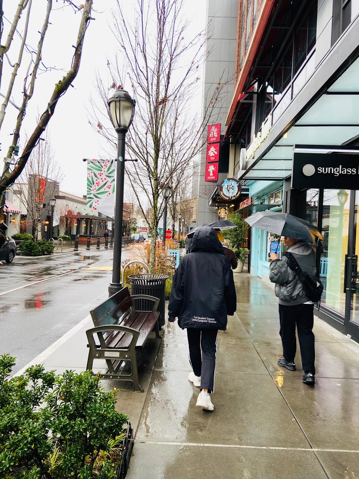
(유니버시티 빌리지를 들어서며. 미국인의 스웩을 한껏 살린 두재정 군.
절대 우산을 쓰지 않는다.)
아침부터 시애틀 시내에서 시작해 광활한 워싱턴 대학교 곳곳을 누비고
다녔기에 이미 우리의 두 다리는 체력에 부쳐 허덕이고 있었다. 이 3명의
친구들과 여행을 같이 다니다 보면 평소 같았으면 무관심하게 지나쳤을
표정, 행동의 변화가 눈에 들어온다. 점점 말수가 적어지고 주변의
풍경보단 다음 목적지를 묻기 시작하며, “얼마나 걸려?”와 같이
이동시간(계획 세울 땐 무관심하게 지나친)을 알고 싶어 한다. 유니버시티
빌리지에 들어온 순간도 이와 다르지 않았다. “우리 이제 어디로
가나요?”라는 말이 귀에 날아들자마자 이는 표면에 드러난 말과는 다르게
어디가 됐든 앉아서 배를 채울 수 있는 곳으로 가자는 말임을 이틀 동안의
경험으로 조금씩 알아 가는 중이었다. 마침 얻을 수 있는 칼로리에 비해
가격이 저렴한 ‘치폴레’ 식당이 눈에 들어왔고, 미국 도착 후 처음으로
우린 쌀이 들어간 음식을 먹을 수 있었다.
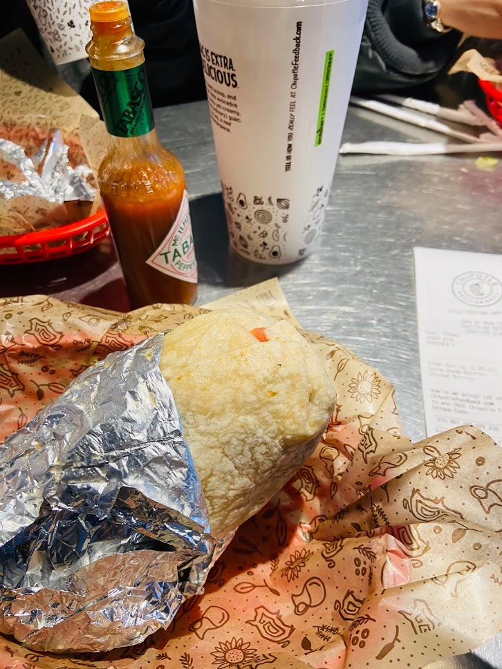
(배를 든든히 채워 준 부리또. 난 맛있게 냠냠 잘 먹었다.)
치폴레의 부리또는 우리에게 두 가지를 안겨주었는데 빗줄기에 시나브로
젖어가던 피곤한 육체엔 휴식과 에너지를, 언제나 가벼워지기만 하던
우리의 지갑엔 가성비를 넣어주었다. 첫날 ‘crab pot'에서의 flex로 인해
항상 힘들어하던 불쌍한 지갑 녀석... 덕분에 숨 좀 돌릴 수 있게
되었다.자, 배도 채웠으니 다시 돌아다닐 시간이 돌아왔다. 하지만 우린
음... 무언가 목적을 상실한 채 거리를 방황하는 4마리의 개들이
되어버렸다. 서로가 서로의 발걸음만을 따라갔다. 누군가 한 발 디디면
나머지도 한 발 씩 걸어갔다. 그가 어디로 향하는지는 중요하지 않았다.
그냥 가는 것이다. 그러다보니 직진하기만 했다. 그 와중에 개들의 코를
자극했던 것은 누군가 한 입 베어 먹은 사과였는데 우리 중 한 마리가
맹렬히 그 사과에 코를 킁킁대기 시작했다. “컹컹, 이것은 에어팟 프로의
냄새가 확실해!” 그에게 이끌려 얼떨결에 애플 매장에 오게 된 네 명.
필자는 이미 아이폰, 아이패드, 에어팟을 쓰고 있었지만 애플 매장을 직접
방문한 것은 처음이었기에 나름 새롭고 흥미로웠다. 새하얀 책상 위,
가지런히 전시된 수많은 애플의 걸작들이 눈을 사로잡았고, 마음 속
어디선가 스멀스멀 올라오는 물욕은 나로 하여금 괜히 직원에게 제품에
대해 이것저것 물어보게 만들었다. 신선함에 취했던 탓일까, 여느 때와
다름없이 주머니 속 아이폰을 꺼내려고 손을 넣었는데 맙소사! 폰이 잡히지
않았다. 옷에 달린 주머니 그 어느 곳에도 나의 일부분인 핸드폰이
느껴지지 않았다. 순간 오만가지 생각이 다 들었다. ‘도둑맞았나?’,
‘시애틀은 소매치기가 별로 없다던데...’, ‘이거 없으면 아무것도
못하는데’, ‘길은 어떻게 찾지?’, ‘우버는 어떻게 부르지?’, ‘잔고는
어떻게 확인하지?’, ‘그나마 공기계를 가져와서 다행이야’, ‘아참 유심을
또 사야하는구나’, ‘아... 폰 바꾼 지 고작 2주됐는데’ 동시에 한 가지
감정도 같이 솟구쳤다. ‘아 X됐네...’ 초조한 마음으로 매장 밖으로
뛰쳐나왔다. 그날 나의 다리 근육과 심장의 rpm이 최고조로 다다른 순간,
매장 앞 의자 팔걸이 위에 민트색 물체가 눈에 들어왔다. 멀리서도 나의
희망, 나의 안도감이 그 위에 놓여 있음을 단번에 알 수 있었다. 하루에
수백 번도 넘게 느끼는 그 딱딱한 그립감이 왜 이리도 반갑던지. 한손엔
핸드폰을, 한손엔 놀란 심장을 부여잡고 의자에 주저 앉아버렸다. 정확히는
다리에 힘이 풀려 앉을 수밖에 없었다. ‘어떻게 폰을 두고 갈 수가
있지...’ 내 자신을 자책하면서도 자책 뒤의 안도의 한숨을 내뱉었다.
의자에 앉아 나의 사과폰을 손에 꼭 쥔 채로 뒤를 돌아보았다. 아직
친구들이 매장 안에 있었다. 그러나 다시는 저 곳에 들어가지 않기로
마음먹었다. 선후관계를 인과관계로 잘못 파악한, 명백한 사고의
오류였지만 그래도 괜찮다. 들어가기 싫은 것을 어찌하겠는가. 아이폰이
가득한 애플 매장에서 아이폰을 잃어버릴 뻔한 아찔한 경험. 나의 아이폰을
냅두고 다른 아이폰을 탐한 나에게 하늘이 내린 벌이었다. 있는 거에나
잘하자. 탐욕은 있는 것도 뺏어간다. 가지지 못하는 것보다 있던 것을
빼앗기는 게 더 뼈아프다는 것은 말 안 해도 잘 알 것이다.매장에서 나와
유니버시티 빌리지 밖으로 향하던 길, 당분 보충을 위해 아이스크림을 1개
사 나눠먹었다. 그런 우릴 주인장이 짠하게 보더라(주인장이 우릴 봤는지
안 봤는지는 모른다. 그냥 내가 주인이었으면 4마리의 개들을 짠하게
봐라봤을 것이다).
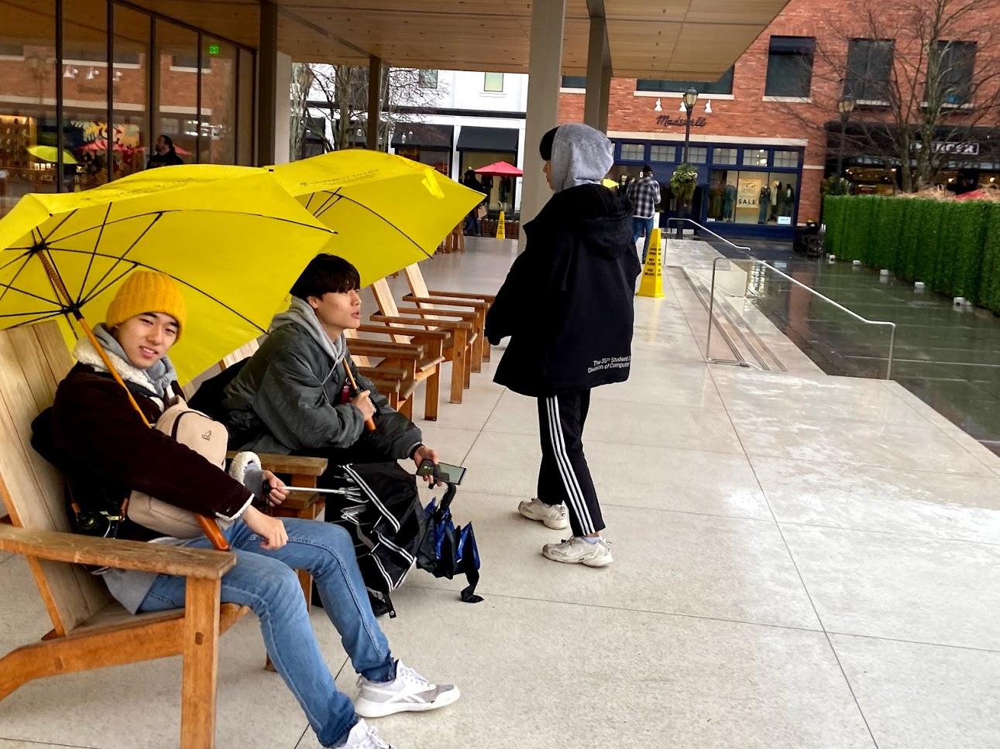
(바로 그 의자.)
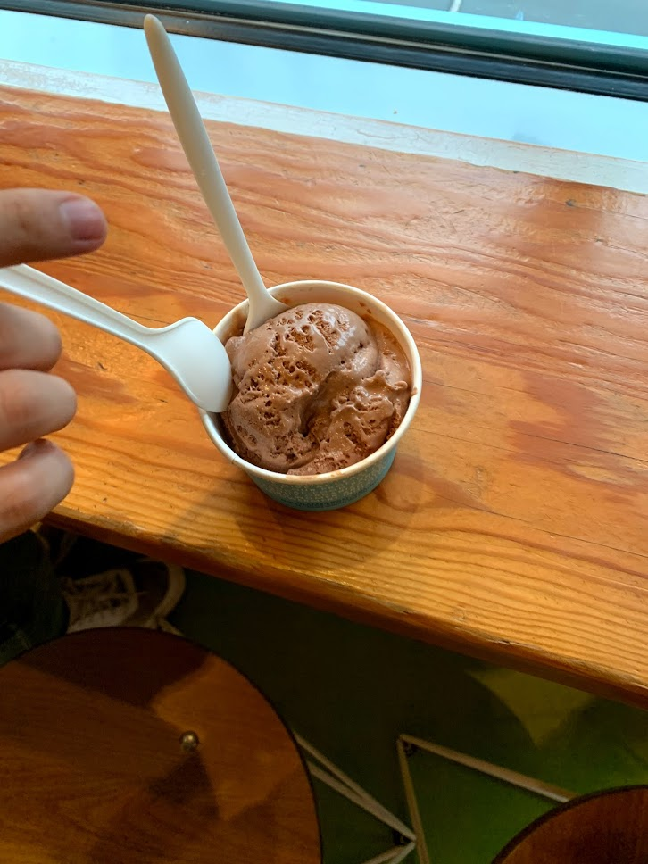
(4명이서 나눠먹은 꾸덕하고 달달한 아이스크림.)
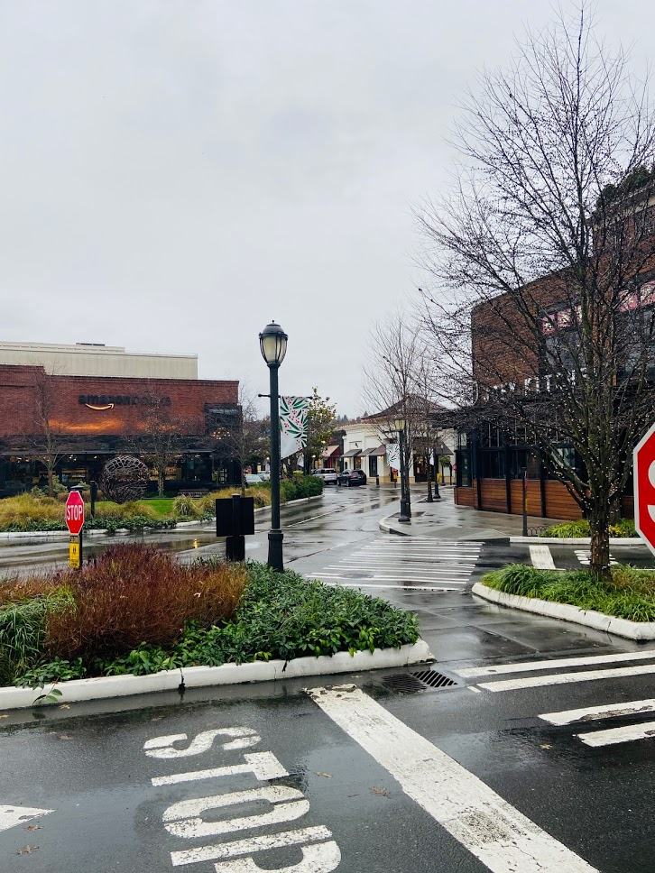
(유니버시티 빌리지를 나오면서.)
아찔한 추억을 끌어안고 하마터면 못 부를 뻔한 우버를 불렀다. 케리
파크에 이어 두 번째로 계획된 공원투어. Gas Works Park에 우린 금세
도착했다. 비도 오고 날이 쌀쌀해서 우리 말고 다른 관광객은 없었다.
끓어오르는 열정을 주체하지 못하고 조깅을 하던 몇몇 형, 누님들만 푸른
들판 위로 난 좁은 길을 따라 열심히 뛰고 있었을 뿐이었다. 그래도 탁
트인 풍경에 마치 천마총을 연상케 하는 푸른 언덕과 호수, 그 뒤로 보이는
시애틀 수평선이 마음을 뻥 뚫어주는 것 같았다. 공원에만 오면 말문이
트이는 우리답게 사진도 찍고, 영상도 찍으며 마음껏 자유를 즐겼다.
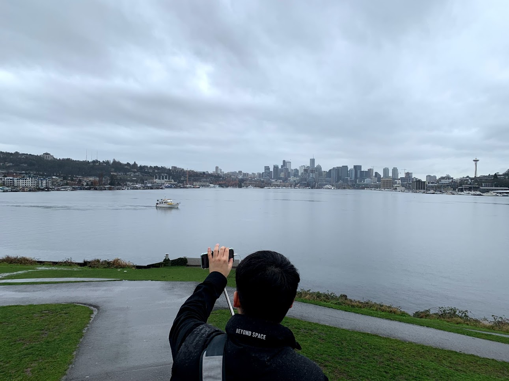
(시애틀 스카이라인.)
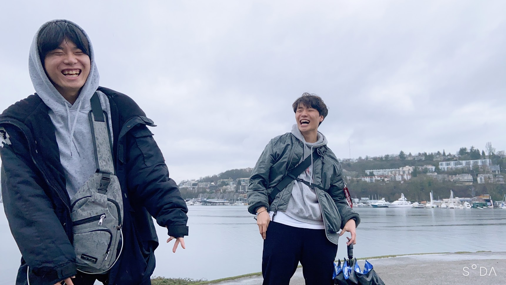
(아따~ 해맑네! 이 웃음 잃지 말기를.)
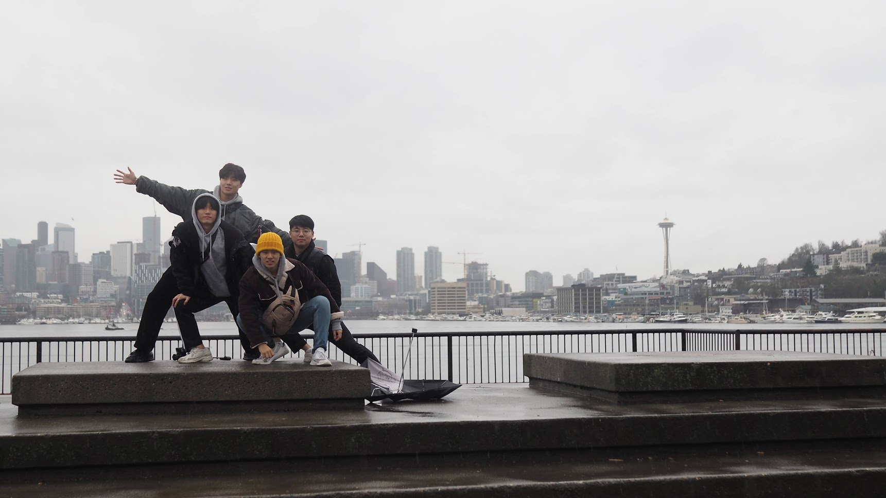
(Gas Works Park에서...1. 시애틀 스카이라인을 배경으로.)
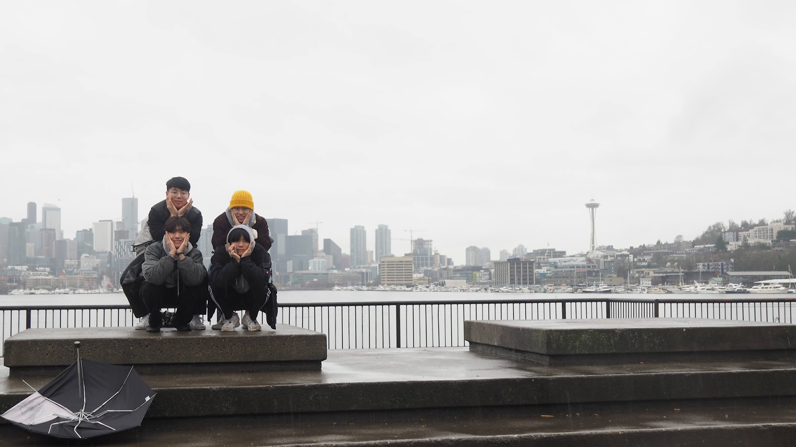
(Gas Works Park에서...2. 저 아래 운명한 우산이 보이는가?)
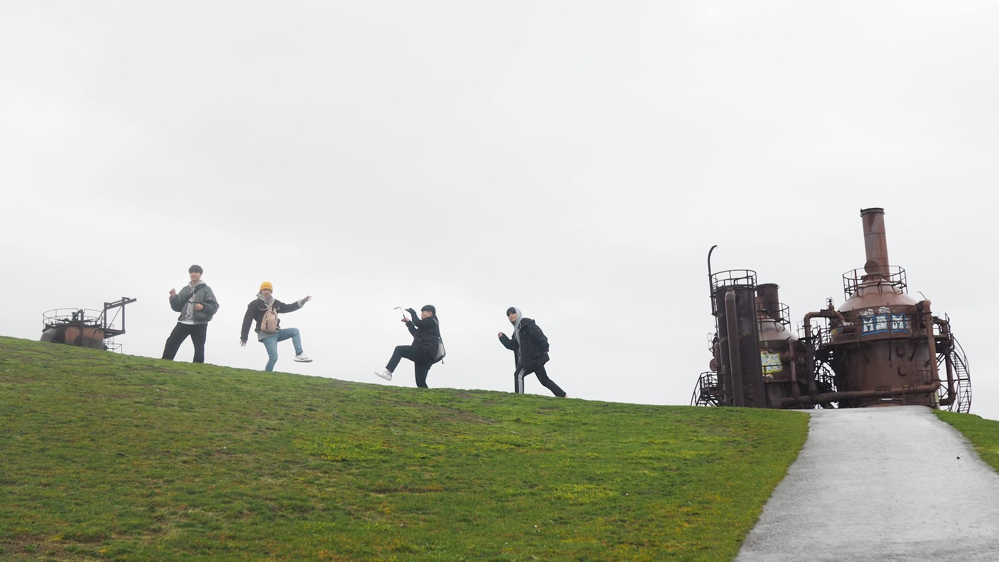
(비가 오든 말든, 바람이 불든 말든. 이날처럼 하고 싶은 거 하면서 살자
얘들아.)
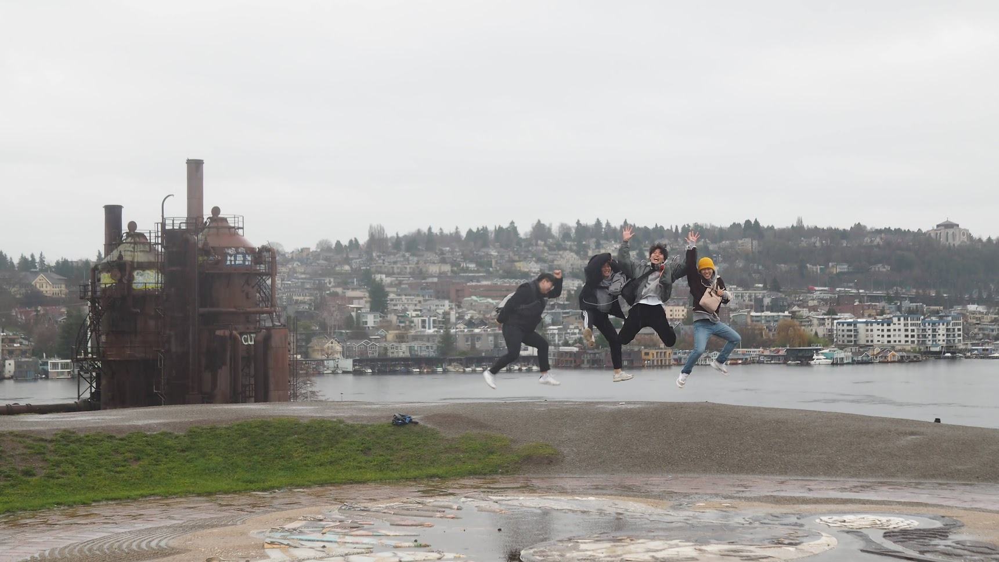
(2020.01.22. 14:17. Lee, Doo, Kang, Kim. Gas Works Park in SEATTLE.)
아, 잠시 빼먹고 지나갔는데 이 공원은 원래 석탄을 이용해 가스를 만드는
시애틀 열 병합 발전소였다. 시애틀 도시에서 이 지역을 공원부지로 인수한
이후 한 조경 건축가가 디자인하여 현재의 모습으로 탈바꿈시켰다. 자칫
폐공장으로 낭비될 뻔 했으나 공원으로서 환생한 이곳은 과거엔
화석에너지를 공급했다면 지금은 사람들 마음에 힐링 에너지를 공급하고
있다. 에너지 보존 법칙은 여기서도 성립하나 보다.
이때까지의 시애틀 일정은 필자가 이들을 이끌었는데, 지금부터 앞으로 2~3개의 관광지 가이드가 희원이로 바뀌었다. 리더의 교체는 공동체의 입장에서 매우 중대한 사안이다. 자칫하면 한순간에 집단의 운명을 나락으로 떨어뜨릴 수도 있다. 그런 불상사를 방지하기 위해 리더는 구성원들에게 현재 우리가 향하는 장소, 이동 수단, 소요 시간에 대한 정보와 그 판단에 대한 이유(ex.프레몬트 트롤까지는 도보로 10분이니 걸어가자)를 미리 제공해야 하며 구성원들은 그에 대한 피드백을 해 주어야 한다. 이 과정에서 무엇보다 중요한 것은 상호간의 신뢰이다. 도보 20분 거리를 10분으로 줄여 말하면 안 된다. 15분을 넘어가는 순간 “이럴 거면 우버를 탔지”라는 비판과 비난을 들을 것이다. 또한 다음번에 이동할 때, 리더의 판단에 대해 구성원들의 지지를 얻기 힘들 것이다. 고로 공동체의 판단 과정에 방해가 될, 자기 자신의 판단의 설득력을 얻기 위한 거짓말은 잠시 접어 두는 것이 좋다. 차라리 “걸어서 20분이지만 돈을 아끼기 위해 걸어가겠어!”라고 말하는 것이 더 낫다. 20분이라는 구체적인 사실과 경제적이라는 합리성을 갖고 있기에 충분히 공동체는 리더의 판단에 지지를 보낼 수 있다. 그리고 무엇보다 리더는 그렇게 말함으로써 나중에 걸어가면서 제기될 구성원의 불만(왜 이렇게 오래 걸려?)에 당당히 대응(내가 아까 20분 걸린다고 했잖아)할 수 있는 면책수단을 쥐게 된다. 그러니 정보는 최대한 정확하게 전달해야한다. “요 앞이야”, “조금만 걸으면 나와”와 같이 애매하고 모호한 표현은 지양하고 정확하고 구체적인 워딩이 필요하다. 공동체의 구성원들 또한 자신 하나만의 안위를 위해 전체를 고려하지 않은 부적절한 피드백을 제시한다면 그것은 이후에 리더의 불신으로 돌아올 것이다. 본인이 조금 힘들더라도 리더의 입장에서 생각해야 할 다른 요소를 고려해보고, 더 나은 대안이 있다면 타당한 근거를 들어 본인의 의견을 제시해야 한다. 무엇보다 미지의 세계에서 책임감을 지고 단체의 길을 밝혀주는 것에 대한 고마움을 꼭 표현하진 않더라도 마음 속 어딘가 지니고 있어야 한다. 그것은 리더의 판단에 대한 존중으로 알게 모르게 조금씩 드러나게 된다.위와 같은 상호간의 진실한 대화와 합의의 과정에 더해 공동체의 여론을 파악해 조금씩 계획을 수정해가는 리더의 약간의 눈치가 있다면 매우 원활하고 재미있는 여행이 될 것이다. 이런 얘기를 쓰는 이유는...누구의 잘잘못을 따지기 위함이거나 누군 잘했고, 누군 못했고를 따지기 위함이 절대! 아니고 그저 여행 중 리더도 되어 보았고 리더가 아닌 구성원도 되어 보았던 2명 중 한명의 개인적인 감상을 풀어내고 싶었기 때문이다. 가이드가 되었을 때는 보지 못했던 것들, 가이드를 따라가는 사람의 입장에서 봤을 땐 놓쳤던 것들이 양 쪽을 모두 경험하고 나서야 보이기 시작했다. 혹시라도 이 글을 읽고 난 뒤, 가족들 혹은 친구들 등 다른 사람들과 여행을 떠날 사람이 있다면 위의 내용이 조금이라도 도움이 되었으면 좋겠다. 아직 살아온 인생이 길진 않지만 꼭 여행이 아니더라도...( )
프레몬트 트롤. 차가 있다면 가볼만 하지만 과연 비를 뚫고 20분을 걸어간
보람이 있었던 관광지냐고 묻는다면 노코멘트로 일관하겠다. 무언가 음산한
다리 밑 어두운 공간에 기괴한 형체가 하나 놓여있다. 나름 신기하긴 했다.
하지만 그게 전부다. 나중에 알게 된 사실인데 그 음산한 공간에서
일어나는 마약거래와 쓰레기 투기 방지를 위해 공공 조각품을 만들어 둔
것이라고 한다. 음지의 공간을 관광지로 만들어 한국에서 온 4명의
사람들을 방문하게 만들다니. 우리가 발을 디딘 순간, 트롤의 목적이
달성돼버렸다.
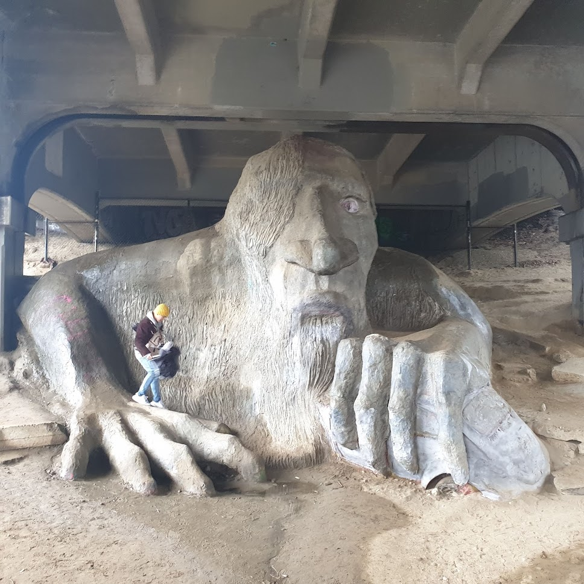
(트롤과 함께 춤을. 느낌상 원효대교 북단이 더 무서운 듯하다.)
트롤을 지나 우린 다시 시애틀 도심지 쪽으로 향했다. 다음날 일찍 시애틀을 떠나 포틀랜드로 이동하는 여정이었기에 이날이 시애틀에서의 마지막 날과 다름없었다. 마지막을 장식할 치훌리 가든과 스페이스 니들 전망대가 우리의 시애틀 관광의 정점이었다. 하지만 시간도 어중간하고 근처에 구글 관광지로 찍힌 곳이 있었기에 우리는 또 다시 걸어서 이동하기 시작했다. 그 목적지는 바로 블라디미르 레닌 동상. 굉장히 의아하다. 자유민주주의와 자본주의의 끝을 달렸던(현재도 달리는) 미국이란 국가에서, 한때 매카시즘 광풍이 불었던 이 나라에서, 사회주의의 끝을 달렸던 소련의 레닌 동상이 놓여 있다는 것은 좀 놀라웠다. 물론 그 동상이 버젓이 서 있을 수 있다는 것이 미국 ‘파운더스(founders, 건국의 아버지들)’의 다양성과 개방, 관용의 정신이지만, 혼란스런 현대사를 품고 아직도 전쟁이 끝나지 않았으며 좌, 우 프레임 싸움이 계속되는 동양의 작은 나라에서 온 사람의 눈으로 보았을 땐 뭔가가 어색했다.
시애틀은 과거부터 이민자들이 많았고 특히 사회주의 성향이 강하던 스칸디나비안들이 많이 정착했다. 또한 현재 샌프란시스코처럼 전자, IT산업이 발달했기에 해외 이민자 유입 및 해외 자본 투자가 매우 중요한 도시이다. 트럼프의 반 이민, 보호무역 정책에 민감할 수밖에 없는 현실의 이유와 과거의 이민자들에 의해 시애틀은 서부의 샌프란시스코와 더불어 미국 내에서 손꼽히는 좌파 도시가 되었다. 이런 사실을 알고 보면 체코슬로바키아에서 철거되어 프레몬트 지역으로 날아온 블라디미르 레닌 동상이 한결 자연스럽게 느껴진다.
결국 이상했던 건 나의 틀에 박힌 가치관이었다. 나도 모르게 서서히
안으로 스며든 이데올로기의 대립. 윤석만 중앙일보 논설위원은 그의
칼럼에서 “보수와 진보는 그 자체가 어떤 이데올로기가 아니라 특정
가치와 철학이라는 내용물을 담는 그릇이라는 이야기입니다.”라고
말했다. 이제는 이념 대립에서 벗어나 그릇에 어떤 내용물을 담을지
고민해야 하는 때이다. 과거부터 지금까지도 정권의 유지만을 위해
소비되는 구시대적 내용물을 비워내고 평등과 자유의 가치를 담아야
한다. 그리고 무엇을 중점적으로 담을지 결정하는 과정은 민주주의의
탈을 쓴 독단이 아닌 수많은 대화와 토론, 합의의 과정을 거쳐
진행되어야 한다. 지금으로부터 2500년 전에도 그리스 사람들은 극장에
모여 소포클레스의 『안티고네』를 보며 고집과 불통이 파멸을 자초한
이야기에 공감했다. 21세기 대한민국의 사람들이 못해낼 이유가 없다.
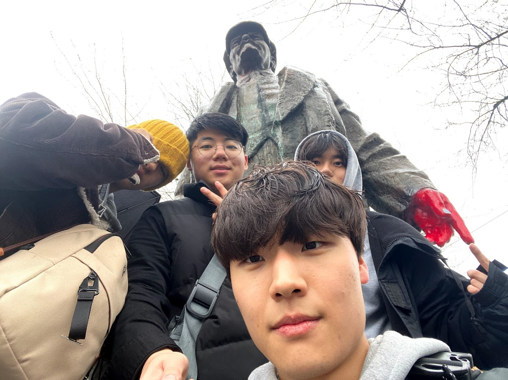
(레닌 동상 앞에서. 오른쪽 천지창조의 손길.)
드디어 오늘의 마지막 관광지이다. 도심으로 향하는 우버를 타는 순간,
느껴졌다. 아 이제 이곳과는 작별이구나. 워싱턴 대학교에서 시작해
유니버시티 빌리지와 가스 웍스 공원을 지나 트롤을 거쳐 레닌 동상까지.
이동거리도 꽤 길었고 시간도 오래 걸렸다. 그만큼 지치고 피곤한 몸을
이끌고 스페이스 니들을 향해 가는 길, 갑자기 뒷자리에 앉아있던 누군가가
단말마의 비명을 내지른다. “아, 티켓 안 가져왔다!” 분명 아침에 호텔
맥스에서 나오기 전에 모두에게 내가 한국에서 소중히 프린트 해온
스페이스 니들 시티패스 입장권을 나눠주었건만...! 큰 캐리어에 넣어버린
후 가방 자체를 새로운 숙소에 맡겨버렸단다. 졸지에 남들은 관광지 구경할
때, 숙소에 갈 처지에 놓인 사람의 정체는 바로 강희원. 사실 내 가방 속엔
여분으로 가져온 4명의 티켓이 고이 자리 잡고 있었지만 나름의 경각심을
주고자(놀리기도 할 겸) 조금 더 그의 속을 애태우기로 했다.(나도 참
못됐다)
(이)“진짜 없어?”
(강)“어, 진짜 없는데?!..”
(이)“아 그걸 두고 오냐ㅡㅡ. 아침에 나눠줬잖아”
(강)“그..게, 캐리어에 넣고 그대로 맡겨 버렸나봐...”
(두)“에휴”
(강)“그...그냥 너..네 머..먼저 가.. ㄸ..뛰어..갔다...오..올게”
마음 같아서는 뛰어 갔다 오게 하고 싶었지만 또 한 배를 탄 이상 그럴 순
없지 않은가. 뒤적뒤적 가방에서 티켓을 꺼내 그에게 내밀었다. “잘 좀
챙겨라, 임마”
어느덧 스페이스 니들 앞에 도착했고 Chihuly Garden & Glass(이하 치훌리)
안으로 들어갔다. 그곳엔 유리로 만들었다는 형형색색의 조각들이 실내
공간과 야외 정원을 수놓고 있었다. 기대 이상으로 아름답고 놀라웠기에
눈과 카메라에 작품을 담기 바빴다.
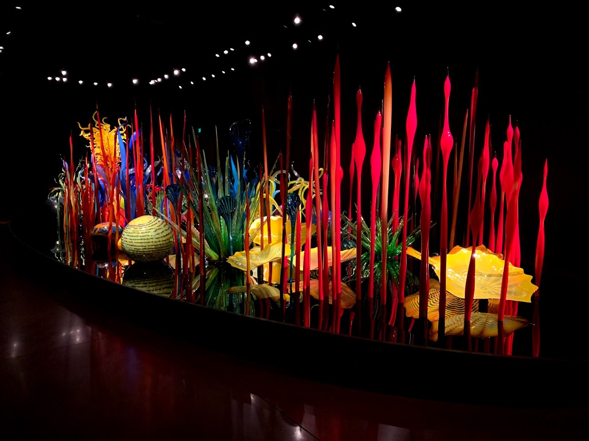
(위와 같은 조각품들이 많이 전시되어 있다.)
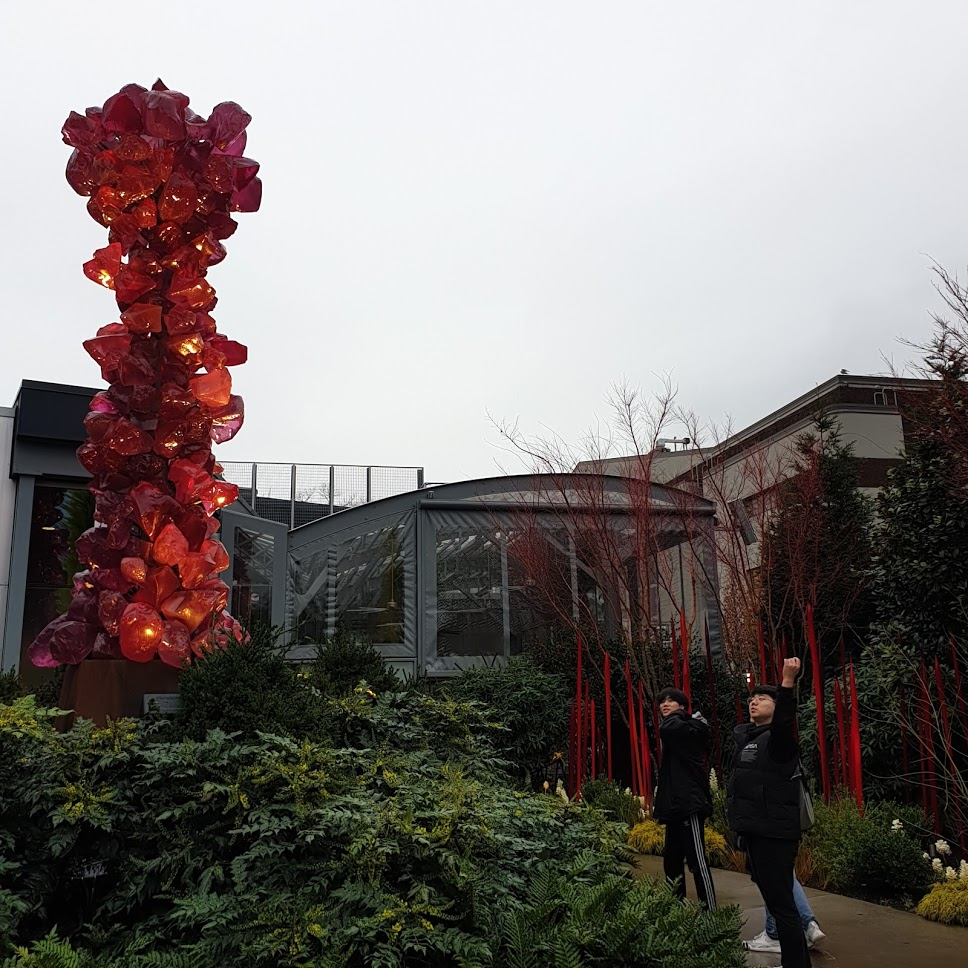
(이날의 하이라이트는 지금부터.)
야외 정원 관람을 끝내고 다시 실내로 들어가려는 순간, 헬기 소리가 들려왔다. 그날은 새벽부터 사이렌 소리가 들려왔고 도심지로 다시 돌아왔을 때에도 계속해서 사이렌과 헬기소리가 반복됐다. 해가 서서히 져 가는 흐린 오후, 뭔가가 싸늘했다. 뭔 일이라도 났나? 호기심이 생겨 구글에 Seattle news를 쳐봤는데 반복되는 단어가 눈에 들어왔다. ‘gun', 'gunshot', 'gunfire', 'shooting'. 그제야 자각했다. 미국에 취해 잠시 잊고 있었던 사실. 이곳은 총기 소지 자유가 헌법에 명시되어 있는 나라라는 것을.
그날 사건에 대해 The Washington Post에서 쓴 기사 제목이다. 시애틀
다운타운에서 두 명의 사람이 총격전을 벌였고 그들에 의해 지나가던
시민 1명이 사망하고 7명이 다쳤으며 그중엔 9살 꼬마아이도 포함됐다.
4명이 같이 즐겨서 하곤 했던 GTA게임이 현실이 된, 다운타운의 위치
또한 어제와 그제 우리가 지나갔던 파이크 플레이스 마켓 근처 파인
스트리트로 우리의 전 숙소였던 호텔 맥스에서 걸어서 5분도 채 안
걸리는 장소였다. 만약에, 정말 만약에 여행 일정이 뒤바뀌었다면, 이제
막 시장 관광을 끝내고 숙소로 돌아가는 날이 어제가 아니라
오늘이었다면 남들이 아닌 우리가 그 8명 중 한 명, 두 명, 세 명, 네
명까지 될 수 있었다.
총기로 인한 위협, 피해는 미국에서 실로 어마어마하다. 이 시애틀
총격사건의 경우 다른 굵직한 총기사건에 비하면 무차별 총기 난사도
아니었고 사상자의 수도 적은 편이다. 우리가 이후에 여행했던
라스베가스에서의 첫날, 대로를 가로지르는 육교 위에서 호텔들의 화려한
조명을 뚫고 어렴풋이 보였던 만달레이 베이 호텔. 2017년 10월 01일 밤
10시 경, 호텔의 한 창문에서 총구가 불을 뿜었다. 그날 호텔 맞은편에서
공연을 즐기던 사람들 중 59명이 죽었고, 422명이 총격에 의해 부상을
입은 사건이 떠오를 수밖에 없었다. 이 외에도 샌프란시스코의
‘텐더로인’ 지역에선 하루가 멀다 하고 총격이 발생하고 우리의 마지막
숙소 지역인 LA의 코리아 타운도 총기 범죄로부터 안전한 지역은 결코
아니었다. 이처럼 미국 전역 어디를 가나 총기에 대한 두려움이 곳곳에
남아있다. 미국이 왜 일반 국민에게 총기 소지의 자유를 보장하느냐,
그것이 과연 타당한가의 논쟁은 대단히 복잡하다. 오죽하면 총기 사고의
발생, 총기 소유에 대한 찬반 논란, 다시 총기 사고의 발생이 반복되는
단순한 래퍼토리가 계속됨에도 쉽사리 그 자유를 빼앗지 못하는 것이 그
증거이다. 총에 대해 단연 가장 많이 언급되는 헌법은 바로 수정헌법
2조이다.
‘A well regulated Militia, being necessary to the security of a free
State, the right of the people to keep and bear Arms, shall not be
infringed’ 잘 규율된 민병대(militia)는 자유로운 주(State)의 안보에
필수적이므로, 무기를 소장하고 휴대하는 시민의 권리는 침해될 수
없다는 것이다.
미국의 정식 명칭은 ‘United States of America'로 주정부가 모여
연방정부를 이루는 국가이다. 이 국가의 시작은 대영제국에 대항한
독립전쟁(동부)과 이민자들의 서부개척(서부)으로 구성된다. 전자에선
폭압적인 정부(영국)에 저항하기위한 무장의 필요성이, 후자에선 무정부
상태에서 개인의 안전을 지키기 위한 무장의 필요성이 요구되었다.
시간이 지나 주정부와 연방정부가 탄생했지만 현대에도 시대적, 문화적
상황이 만들어낸 정신이 남아있다. 정부가 폭정을 휘두르면 시민들은
총을 가지고 정부에 맞설 것이라는 ‘저항’의 뜻으로, “We don't call
911, We use gun”이라는 표지판 안내 문구는 총으로 개인의 안전을
지키겠다는 ‘호신’의 뜻으로 사람들에게 각인되어 있는 것이다. 그렇기에
위의 수정헌법이 지금까지도 숱한 논쟁의 대상은 되었지만 없어지지 않고
오히려 정부에 대한 시민의 저항, 연방정부에 대한 주정부의 저항 그리고
개인의 안전을 위한다는 정당성을 굳혀가는 것이다.
총은 어쩌면 미국이라는 나라의 정체성을 대변하는 물건일 수 있겠다.
결국 총이 문제가 아니다. 누가 총을 잡느냐가 문제이다. 미국의
암면이었던 방치된 마약 중독자나 정신질환자와 같은 사람들이 총을
들면서 세 번째 미국의 암면을 만들어 낸다. 너무나 안타깝다. 인간이
자초한 시스템의 부재가 사회 안전망을 무너뜨리는 것이. 사람 살리는
것을 꿈으로 가진 나로서 이런 죽음들은 너무나 가슴 아프게 다가온다.
단순히 총의 문제가 아니기에 해결하기 더 어려운 사안인 것도 너무나
애석하다. 우린 그날 어둠에 한걸음 가까워졌을 뿐이지만 누군가는 그
어둠에 갇혀 영원히 빛을 잃었다. 그리고 지금 이 순간에도
누군가(someone)는 누군가(anyone)의 모습으로 세상의 빛을 등진 채 눈을
감는다.
길거리에서 총으로 사람이 죽는다는 것은 한국에선 겪어보지 못했던
경험이었기에 꽤나 오싹하고 무서웠다. 겉으로는 덤덤하게 시애틀 여행의
마지막을 장식하기 위해 스페이스 니들 전망대로 올라갔다. 스타벅스 1호점
다음으로 많은 수의 관광객이 그곳에 있었다. 다들 그런 사고가 있었다는
걸 아는지 모르는지 평온해 보였다. 나도 이제 그만 잊어보기로 했다.
다행히도 전망대에서 내려다보는 아름다운 시애틀의 뷰에 더해 시간의
흐름이 바다에서부터 도시를, 그리고 내 마음까지 서서히 바꿔주고 있었다.
처음으로 발을 디딘 미국의 도시 시애틀. 그것만으로도 충분히 기억될만한
도시였는데도 이에 그치지 않고 수많은 매력을 어필했던 이 도시를
계속해서 바라보았다. 친구들과 옹기종기 건물을 빙빙 도는 바닥에 앉아 몇
번이고 반복되는 같은 하늘, 같은 건물, 같은 바다를 눈에 담았다.

(전망대에서 내려다 본 풍경. 아직은 해가 떠 있다)
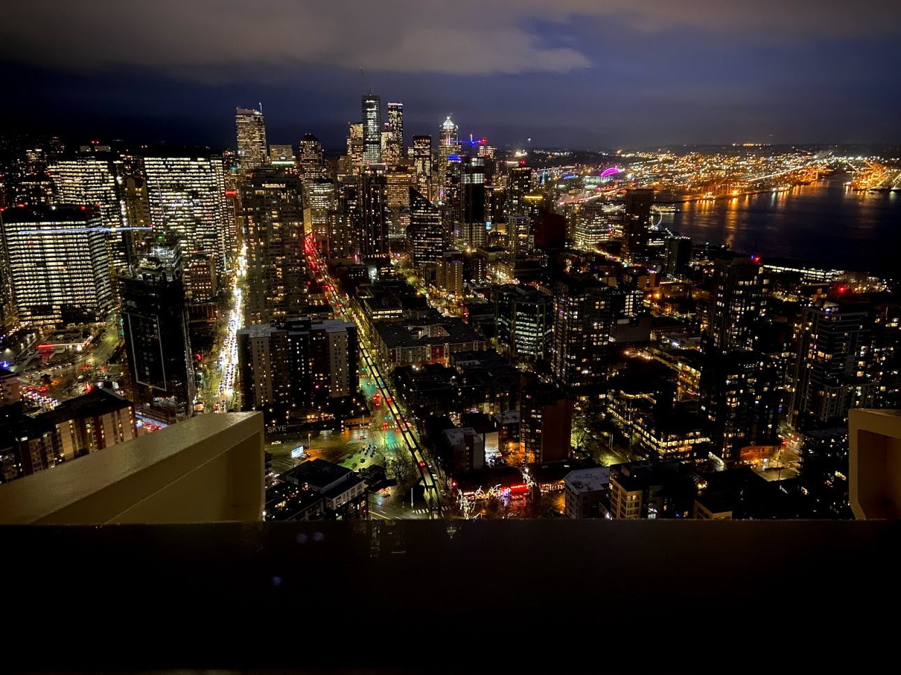
(해가 진 빈자리는 도시의 조명이 훌륭하게 메꿔 주었다)
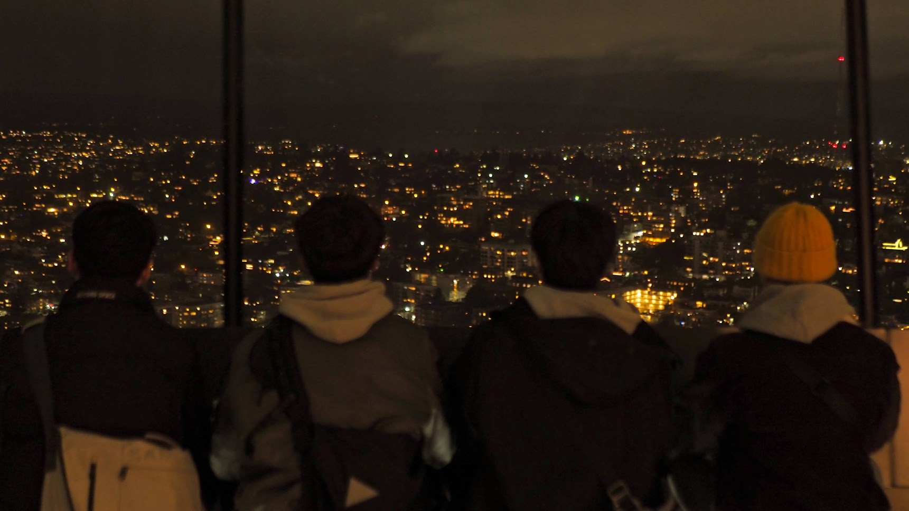
(전망대의 빈자리는 우리가 옹기종기 메웠다)
슬슬 배가 고팠다. 오늘도 하루 종일 돌아다녔기에 피곤했다. 이제는 저
어둠을 뚫고 저녁을 포장해서 숙소로 돌아가기로 했다. 원래 돌아가는 길,
눈에 띄는 식당에서 밥을 먹고 들어가기로 했으나 마땅히 먹을 곳도 없었고
여전히 무서움이 남아있었기에 얼른 숙소로 들어가고픈 마음이 컸다.
전망대에서 내려와 길을 걷던 중 우연히 피자와 술을 파는 술집 비스무리한
집을 찾아 들어갔다. 우린 미국 기준으로 술을 먹을 수 없는 만 20세의
꼬맹이들이었기에(미국은 만21세부터 음주가 가능하다, crab pot에서 먹은
에일맥주는 그냥 깡으로 주문했는데 알바가 여권 한 번 슥 확인하고 찡긋
웃더니 주문 넣어줬기에 먹을 수 있었던 것) 술집 안에서 주문만 하고 음식
나올 때까지 대기는 밖에서 해야 했다. 철저한 준법정신에 놀라워하며
밖으로 나왔다. 기다리는 시간에 음료수를 사기 위해 나랑 창민이는 건너편
마트로 향했다. 미드에서 자주 봐 뭔가 익숙한 곳에서 이것저것 담고
계산했다. 무심히 바코드를 찍던 직원에게 혹시 오늘 다운타운에서
총격전이 있었던 것을 아냐고 물어봤다. 모른다더라. 옆에 서있던 푸근한
아주머니가 말을 거들었다.
“그런 일은 너무 자주 있어서 익숙해. 별로 무섭지도 신경 쓰지도 않고.”
역시 사람은 적응의 동물.
피자가 나왔다! 이제 모든 일정은 끝났다. 안전하게 귀가하는 것까지. 뭔지
모를 안도감이 몰려왔다. 피자도 참 맛있더라.
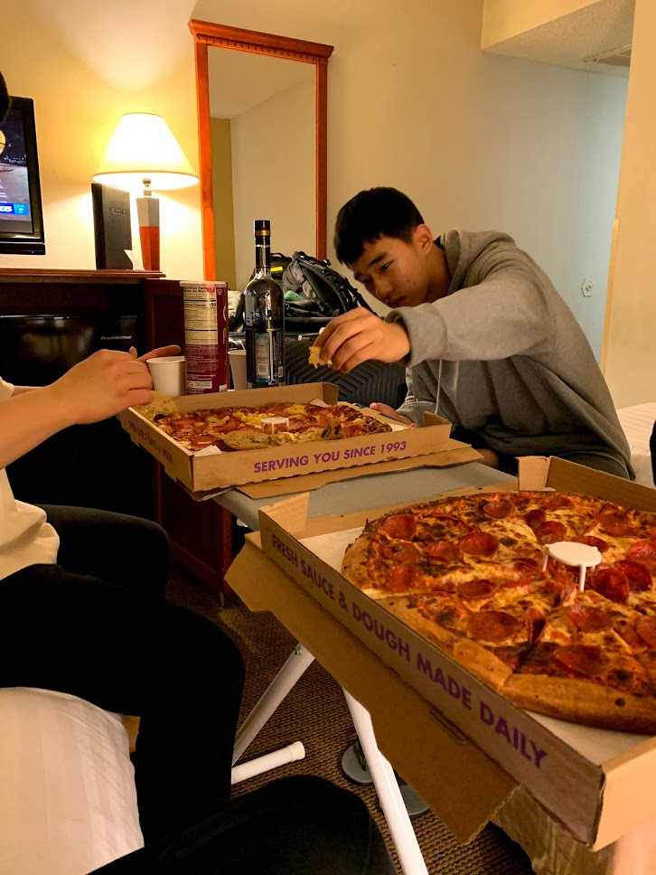
(창렬 군이 꼽은 미국에서의 인생피자. 포장이었는데도 모르고 팁을
준거만 빼면 나도 완벽했다고 생각한다)
맛있는 피자와 콜라, 독한 보드카는 우리의 미국 첫 번째 여행지의 마지막
밤을 완벽히 장식해 주었다. 틀어놓은 tv에서 흘러나오는 시애틀 오늘의
뉴스. 당황스럽기도 하고 무서웠기도 했지만 마트에서의 아주머니처럼 점점
하루의 평범한 뉴스로 들리기 시작했다. 다른 채널에선 미드 ‘리버데일’이
방송되고 있더라. 침대에 누워 반쯤 풀린 눈으로 쉴 새 없이 쏟아져 나오는
영어 대사를 곱씹었다. 뭔 말인지 잘 모르면서도 뭔가 알 것 같았다.
한국에서의 저녁이나 미국에서의 저녁이나 크게 다르지 않았다. 밥
먹으면서 뉴스보고 드라마보기. 점차 여행은 일상으로 녹아들고 있었고
한국인 여행객 4명도 미국에 스며드는 중이었다. 아마 하루 더 있었다면
tv에서 나오던 코미디 쇼의 미국식 유머들을 모두 이해하고 깔깔댈 수
있었을지도 모른다. 하지만 우린 떠나야 했다.
낯섦으로 시작해 3일간 정들었고, 떠나기 싫은 아쉬움으로 마무리 지었던
도시 시애틀. 이 도시에 다시 와야 할지 아니면 멀리서 좋은 기억만으로
남겨두어야 할지 고민이다. 아니다. 와볼 것이다. 그러니 부디 나는 변해도
이곳만큼은 변함없이 똑같은 모습으로 남아있길 빈다. 10년 뒤, 2030년의
내가 2020년의 나를 찾을 수 있도록 시애틀이 가르쳐주면 좋겠다. 도시
어딘가 묻어간 한 여행객의 발자국도 같이 기억되도록 시애틀이 시애틀을
기억해주면 좋겠다.
<시애틀 여행, 끝>